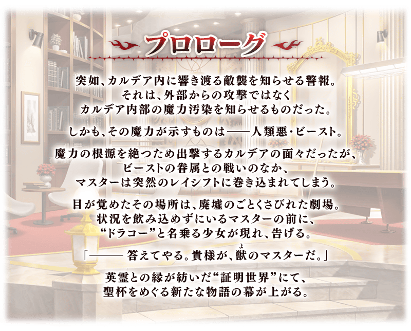
【5月5日(五) 17:00追記】
・「★5(SSR)莫德雷德(Saber)」「★4(SR)尼祿・克勞狄烏斯(Saber)」「★4(SR)阿爾托莉亞・潘德拉剛〔Alter〕(Lancer)」的強化關卡追加！
【5月2日(二) 17:00追記】
・挑戰關卡開放！
・「★5(SSR)南丁格爾」的強化關卡追加！
【4月30日(日) 17:00追記】
・「★5(SSR)雅克・德・莫萊」「★4(SR)吉爾伽美什(Caster)」的強化關卡追加！
期間限定Fate/Grand Order Arcade×Fate/Grand Order聯動活動「螺旋證明世界 莉莉姆哈洛特 ～無人喝采的薔薇～」開幕！
與突然襲擊迦勒底人類惡・Beast對峙的御主們。
敬請期待戰鬥當中靈子轉移到劇場而發展的圍繞聖杯故事！
本活動的劇本，是由負責遊戲和動畫等許多作品劇本的鋼屋ジン氏所執筆！
透過與外部劇本寫手的聯動，描寫新的『Fate/Grand Order』世界！
※本頁面皆為開發中圖片。會有與實際圖片相異的情況。 ※在2018年12月31日(二) 23:00以後新配信的主線故事及期間限定活動、一部份關卡、宣傳活動及召喚中，會顯示隱藏真名的對象從者真名。 ※一部份的關卡為日後開放。 ※請注意「★4(SR)瑟坦特」在通過活動開幕緊接開放的主線關卡階段不會暫時加入。
◆活動舉辦期間◆
2023年4月26日(三) 19:00～5月17日(三) 11:59
◆活動參加條件◆
滿足以下條件的御主才能參加
・通過「特異點F 炎上汙染都市 冬木」
※在文字冒險部份包含第2部 第3章為止的一部份內容。
◆注意◆
本活動的參加條件為通過特異點F，由於本活動為相當於第2部 第3章之後的故事，會包含有關第2部 第3章為止內容的一部份劇透。關於尚未通過到第2部 第3章的參與玩家，請在了解包含一部份劇透後來參與。
由於在『Fate/Grand Order 迦勒底放送局SP「Fate/Grand Order Arcade」聯動活動開幕記念放送』達成7萬轉推，實施放送記念登入獎勵！
在下述期間中登入的話，贈送聖晶石14個。
◆領取期間◆
2023年4月27日(四) 3:00～5月4日(四) 2:59
上述期間中，在初次登入到「Fate/Grand Order」的時間點，贈予到禮物箱。
※期間內未登入的話無法領取。
※禮物只能領取1次。
◆贈送內容◆
聖晶石 14個
◆贈送對象◆
2023年4月27日(四) 2:59前通過「特異點F 炎上汙染都市 冬木」的御主對象
※上述時間前，在管理室(ターミナル)畫面的關卡橫幅必須要有「CLEAR」的文字顯示。
在「Fate/Grand Order」官方網站內首頁及Gallery，公開了聯動活動「螺旋證明世界 莉莉姆哈洛特 ～無人喝采的薔薇～」的電視廣告。
敬請確認。
動畫製作：CloverWorks
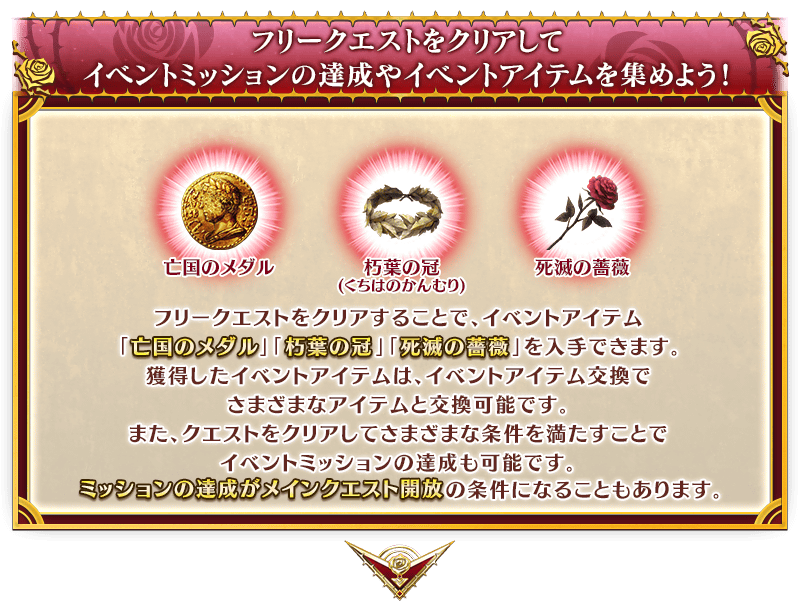
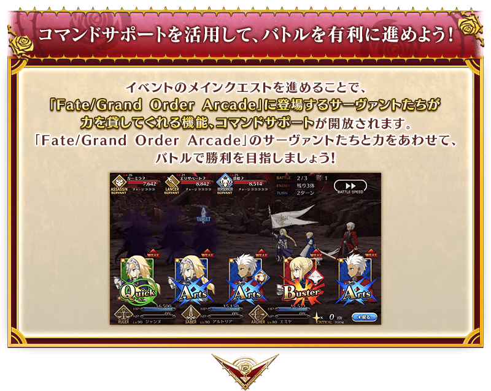
 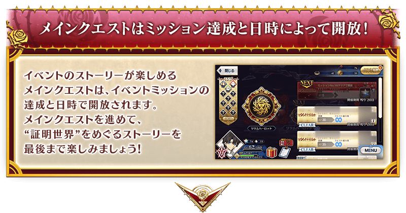
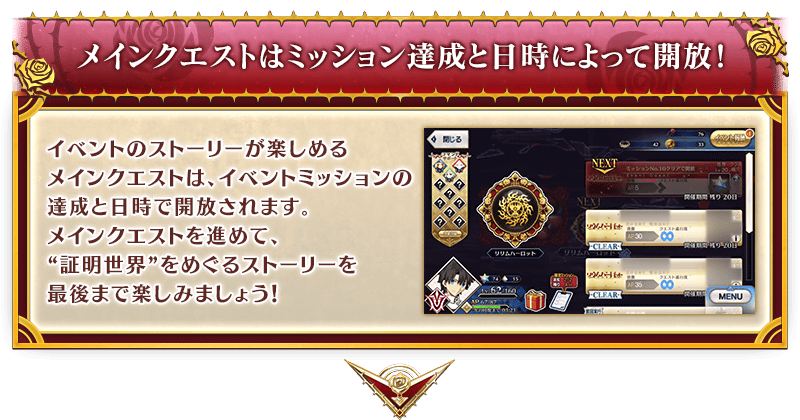
享受故事的主線關卡將逐日開放。
推進主線關卡的話，活動限定的配布從者「★4(SR)瑟坦特」會正式加入。
另外，通過關聯的主線關卡後，會開放收集活動道具的自由關卡。
並且，通過後記(エピローグ)的話，會出現可獲得活動限定的配布從者「★4(SR)瑟坦特」的寶具強化専用靈基的關卡。
【關卡的舉辦期間】
| 關卡的種類 | 舉辦期間 |
|---|---|
|
序幕(プロローグ) 主線關卡第1節 主線關卡第2節 自由關卡 |
2023年4月26日(三) 19:00～ 5月17日(三) 11:59 |
|
主線關卡第3節 主線關卡第4節 主線關卡第5節 自由關卡 |
2023年4月27日(四) 17:00～ 5月17日(三) 11:59 |
|
主線關卡第6節 主線關卡第7節 自由關卡 |
2023年4月28日(五) 17:00～ 5月17日(三) 11:59 |
|
主線關卡第8節 主線關卡第9節 主線關卡第10節 自由關卡 |
2023年4月29日(六) 17:00～ 5月17日(三) 11:59 |
|
主線關卡第11節 主線關卡第12節 主線關卡第13節 自由關卡 |
2023年4月30日(日) 17:00～ 5月17日(三) 11:59 |
|
主線關卡第14節 主線關卡第15節 自由關卡 |
2023年5月1日(一) 17:00～ 5月17日(三) 11:59 |
|
主線關卡第16節 主線關卡第17節 後記(エピローグ) 自由關卡 |
瑟坦特正式加入
2023年5月2日(二) 17:00～
5月17日(三) 11:59 |
聯動活動「螺旋證明世界 莉莉姆哈洛特 ～無人喝采的薔薇～」中會發生「收集特定的道具一定數以上」「擊倒特定的敵人」等各式各樣條件的任務。
達成任務後，獲得豪華報酬！
另外，對應任務的達成状況會開放新的任務和主線關卡。
通過任務，邊獲得達成報酬邊推進主線關卡吧！
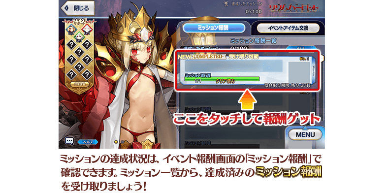
※請注意光滿足通過條件無法入手報酬。 ※請注意未領取任務報酬的話，不會開放新的任務和地點。
配合活動關卡的進行，會有追加特別關卡的情況。
通過此關卡，或達成以通過該關卡為條件的任務後，會開放新的主線關卡。
※會有任務達成後也可挑戰關卡的情況。
※無劇本的關卡也會存在。
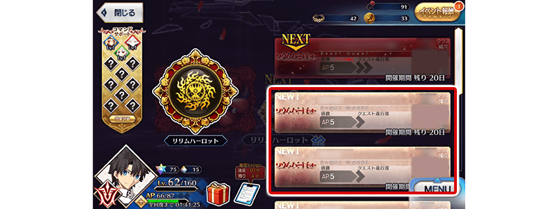
本活動中追加指令支援，是在「Fate/Grand Order Arcade」登場的從者們在戰鬥中借助力量的功能。
指令支援在通過本活動的特定關卡時開放，在戰鬥中隨機對指令卡(含候補成員最多30張)賦予。
選擇賦予指令支援過指令卡的話，在以該指令卡攻擊時，會得到對應指令支援的效果，比如以機率賦予暈眩狀態、防禦力下降。
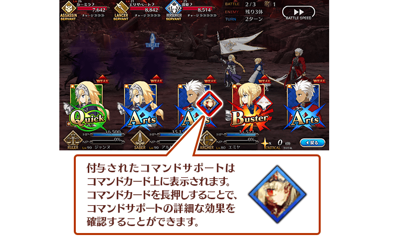
關於指令支援的種類
有準備全11種指令支援，開放更多支援後也會增加受到效果的機會。
開放的指令支援可在活動畫面上確認。
另外，點擊指令支援一覧的「效果詳細」和隊伍確認畫面的「指令支援詳細」按鍵後，也能確認各支援的詳細效果。
指令支援有3種欄位的顏色，會賦予到同樣顏色的指令卡。
※不會對Extra卡與寶具卡賦予指令支援。 ※就算透過一部份技能變化指令卡的卡種，賦予的指令支援會維持賦予到原本的指令卡。
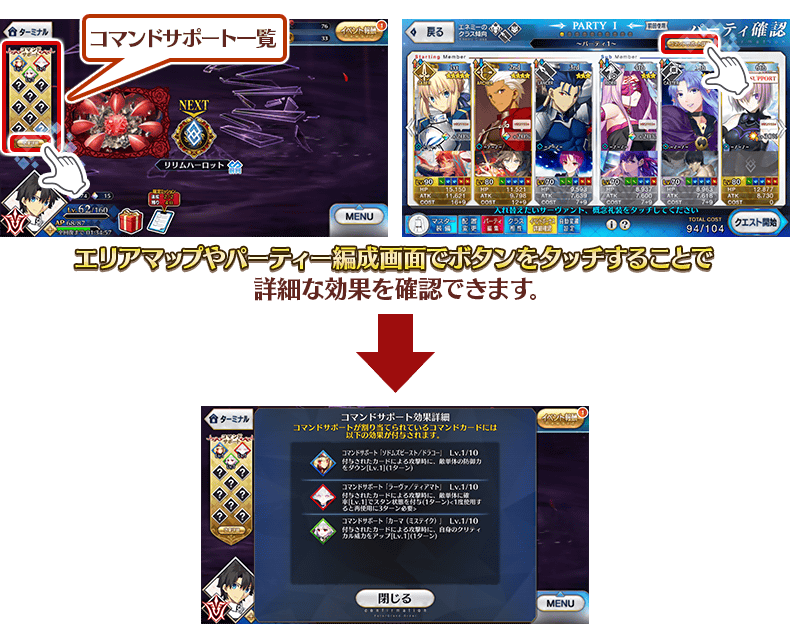
開放的指令支援，通過特定的活動限定任務後會提高等級。
提高等級後，指令支援的效果會上升。

※根據通過的任務，會有分開上升和多個指令支援一起上升。
【5月2日(二) 17:00追記】
以通過聯動活動「螺旋證明世界 莉莉姆哈洛特 ～無人喝采的薔薇～」所有活動限定任務及「終局特異點」的為御主對象，開放高難易度的「挑戰關卡」。
「挑戰關卡」就算通過後也不會消失，可以變更從者和概念禮裝的組合等後無限次挑戰。
※關卡通過報酬、戰利品、御主EXP、魔術禮裝EXP、絆點數只可在初次通過時獲得。
◆挑戰關卡開放時間◆
2023年5月2日(二) 17:00～
◆挑戰關卡參加條件◆
滿足以下條件的御主才能參加
・通過聯動活動「螺旋證明世界 莉莉姆哈洛特 ～無人喝采的薔薇～」的所有活動限定任務
・通過「終局特異點」
◆挑戰關卡初次通過報酬◆
傳承結晶 1個
◆靈基再臨◆
使用能靠活動限定任務的通過報酬交換入手的「凱爾特式修練武具」，重複4次靈基再臨的話，卡面會有所變化！
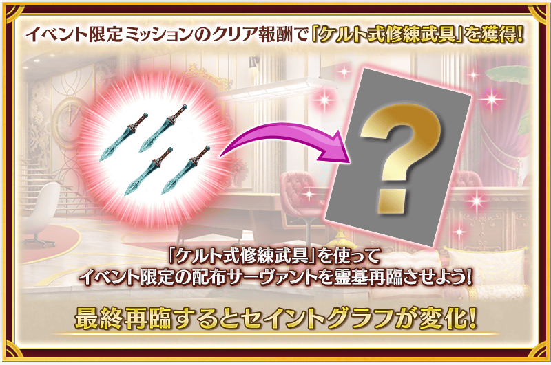
※「★4(SR)瑟坦特」不會隨靈基再臨使戰鬥角色的外觀變化。
◆關於「★4(SR)瑟坦特」的從者硬幣◆
「★4(SR)瑟坦特」的從者硬幣，在本活動中可在活動道具交換入手。
活動道具交換:最大480枚
介紹「★4(SR)瑟坦特」的寶具演出！
介紹「★4(SR)瑟坦特」的寶具演出！
超值攻略方法・其1
本活動的期間中，強化活動的配布從者「★4(SR)瑟坦特」時的獲得經驗值變成2倍。
是讓成為活動加成對象的「★4(SR)瑟坦特」等級一口氣上升的機會！
◆舉辦期間◆
2023年4月26日(三) 19:00～5月17日(三) 11:59
超值攻略方法・其2
本活動的期間中，下表的從者は在活動關卡中，會得到「自身的攻擊威力提升」與「絆點數獲得量提升」的加成！
強化對象從者，挑戰活動吧！
※活動加成的效果量因從者而異。 ※瑪修・基利艾拉特的「絆點數獲得量提升」效果，是所謂「我方全體含候補的絆點數獲得量提升」的效果。支援時此效果無效。
【活動加成的效果與對象從者】
| 自身的 攻擊威力 |
絆點數 獲得量 |
職階 | 稀有度 | 從者名 |
|---|---|---|---|---|
| ＋100% | 只限自身 ＋50％ |
Saber | ★★★★ | 瑟坦特 |
| Assassin | ★★★★ | 洛庫斯塔 | ||
| Alterego | ★★★★★ | 幼體／迪亞馬特 | ||
| Beast | ★★★★★ | 所多瑪之獸／德拉科 | ||
| ＋50% | 只限自身 ＋20％ | Caster | ★★★★ | 吉爾伽美什 |
| Assassin | ★★★★★ | 開膛手傑克 | ||
| Berserker | ★★★★★ | 庫・夫林〔Alter〕 | ||
| Foreigner | ★★★★★ | 雅克・德・莫萊 | ||
| Pretender | ★★★★★ | 阿瓦隆女士 | ||
| ＋30% | 只限自身 ＋20％ |
Saber | ★★★★★ | 亞瑟・潘德拉剛〔Prototype〕 |
| ★★★★★ | 阿斯托爾福 | |||
| ★★★★★ | 阿蒂拉 | |||
| ★★★★★ | 阿爾托莉亞・潘德拉剛 | |||
| ★★★★★ | 沖田總司 | |||
| ★★★★★ | 千子村正 | |||
| ★★★★★ | 尼祿・克勞狄烏斯〔Bride〕 | |||
| ★★★★★ | 宮本武藏 | |||
| ★★★★★ | 莫德雷德 | |||
| ★★★★★ | 兩儀式 | |||
| ★★★★ | 阿爾托莉亞・潘德拉剛〔Alter〕 | |||
| ★★★★ | 葛飾北齋 | |||
| ★★★★ | 齊格飛 | |||
| ★★★★ | 騎士德翁 | |||
| ★★★★ | 女王梅芙 | |||
| ★★★★ | 尼祿・克勞狄烏斯 | |||
| ★★★ | 蓋烏斯・尤利烏斯・凱撒 | |||
| ★★★ | 吉爾・德・萊斯 | |||
| Archer | ★★★★★ | 阿周那 | ||
| ★★★★★ | 阿爾托莉亞・潘德拉剛 | |||
| ★★★★★ | 伊絲塔 | |||
| ★★★★★ | 吉爾伽美什 | |||
| ★★★★★ | 詹姆斯・莫里亞蒂(新宿的Archer) | |||
| ★★★★★ | 貞德 | |||
| ★★★★★ | 清少納言 | |||
| ★★★★ | 淺上藤乃 | |||
| ★★★★ | 阿塔蘭塔 | |||
| ★★★★ | Emiya | |||
| ★★★★ | 織田信長 | |||
| ★★★★ | 克洛伊・馮・愛因茲貝倫 | |||
| Lancer | ★★★★★ | 阿爾托莉亞・潘德拉剛 | ||
| ★★★★★ | 恩奇都 | |||
| ★★★★★ | 埃列什基伽勒 | |||
| ★★★★★ | 迦爾納 | |||
| ★★★★★ | 斯卡薩哈 | |||
| ★★★★★ | 玉藻前 | |||
| ★★★★★ | 布拉達曼特 | |||
| ★★★★ | 阿爾托莉亞・潘德拉剛〔Alter〕 | |||
| ★★★★ | 伊莉莎白・巴托里 | |||
| ★★★★ | 虞美人 | |||
| ★★★★ | 源賴光 | |||
| ★★ | 武藏坊弁慶 | |||
| ★★ | 列奧尼達一世 | |||
| Rider | ★★★★★ | 阿爾托莉亞・潘德拉剛〔Alter〕 | ||
| ★★★★★ | 伊斯坎達爾 | |||
| ★★★★★ | 奧茲曼迪亞斯 | |||
| ★★★★★ | 司馬懿〔萊涅絲〕 | |||
| ★★★★★ | 弗朗西斯・德雷克 | |||
| ★★★★★ | 李奧納多・達・文西 | |||
| ★★★★ | 瑪莉・安東尼 | |||
| ★★★★ | 瑪爾大 | |||
| ★★★ | 布狄卡 | |||
| ★★★ | 美杜莎 | |||
| ★★ | 愛德華・蒂奇 | |||
| ★★ | 聖喬治 | |||
| Caster | ★★★★★ | 伊莉雅絲菲爾・馮・愛因茲貝倫 | ||
| ★★★★★ | 諸葛孔明〔埃爾梅羅Ⅱ世〕 | |||
| ★★★★★ | 斯卡薩哈＝斯卡蒂 | |||
| ★★★★★ | 玉藻前 | |||
| ★★★★★ | 梅林 | |||
| ★★★★★ | 李奧納多・達・文西 | |||
| ★★★★ | 美遊・艾蒂菲爾特 | |||
| ★★★★ | 美狄亞〔Lily〕 | |||
| ★★★ | 庫・夫林 | |||
| ★★★ | 吉爾・德・萊斯 | |||
| ★ | 沃夫岡・阿瑪迪斯・莫札特 | |||
| Assassin | ★★★★★ | 刑部姬 | ||
| ★★★★★ | 酒吞童子 | |||
| ★★★★★ | 光之高揚斯卡婭 | |||
| ★★★★★ | “山之翁” | |||
| ★★★★ | 卡米拉 | |||
| ★★★★ | 格蕾 | |||
| ★★★★ | 尼托克里絲 | |||
| ★★★★ | 兩儀式 | |||
| ★★★ | 岡田以藏 | |||
| ★★ | 咒腕的哈桑 | |||
| ★★ | 歌劇魅影 | |||
| ★ | 瑪塔・哈里 | |||
| Berserker | ★★★★★ | 弗拉德三世 | ||
| ★★★★★ | 坂田金時 | |||
| ★★★★★ | 南丁格爾 | |||
| ★★★★★ | 謎之女主角X〔Alter〕 | |||
| ★★★★★ | 宮本武藏 | |||
| ★★★★★ | 摩根 | |||
| ★★★★ | 茨木童子 | |||
| ★★★★ | 貞德〔Alter〕 | |||
| ★★★★ | 赫拉克勒斯 | |||
| ★★★★ | 蘭斯洛特 | |||
| ★★★ | 清姬 | |||
| ★★ | 卡利古拉 | |||
| ★ | 保羅・班揚(看漫畫了解Berserker) | |||
| Ruler | ★★★★★ | 天草四郎 | ||
| ★★★★★ | 阿爾托莉亞・潘德拉剛 | |||
| ★★★★★ | 夏洛克・福爾摩斯 | |||
| ★★★★★ | 貞德 | |||
| ★★★★ | 阿斯特蕾亞 | Avenger | ★★★★★ | 巖窟王 |
| ★★★★★ | 貞德〔Alter〕 | |||
| Alterego | ★★★★★ | Meltryllis | ||
| ★★★★ | Passionlip | |||
| MoonCancer | ★★★★★ | BB | ||
| ★★★★ | BB | |||
| Foreigner | ★★★★★ | 艾比蓋兒・威廉斯〔夏〕 | ||
| ★★★★★ | 葛飾北齋 | |||
| ★★★★ | 謎之女主角XX | |||
| 我方全體 ＋5％ |
Shielder | ★★★ | 瑪修・基利艾拉特 |
※就算成為對象從者也會有未在本活動的主線劇本登場的情況。 ※自4月19日(三) 17:00，在從者選擇畫面和從者強化畫面等，追加活動加成篩選器。由於是只顯示於活動活躍從者的便利功能，敬請活用。
超值攻略方法・其3
裝備活動限定概念禮裝與期間限定概念禮裝的話，在活動中會受到各式各樣的恩惠。
裝備可靠活動道具交換入手的活動限定概念禮裝「★5(SSR)揺籃の歌」的話，在聯動活動「螺旋證明世界 莉莉姆哈洛特 ～無人喝采的薔薇～」中自身的攻擊威力會提升。
並且，裝備在本活動的聖晶石召喚及「聯動活動開幕前夕Pick Up召喚」Pick Up的期間限定概念禮裝「★5(SSR)グレート・マザー」「★4(SR)マッシュルーミング」「★3(R)サービス・ゲームス」的話，活動道具「亡國徽章」「朽葉之冠」「死滅薔薇」各自的掉落獲得數會提升。
※請注意各關卡的道具掉落率並非100％。
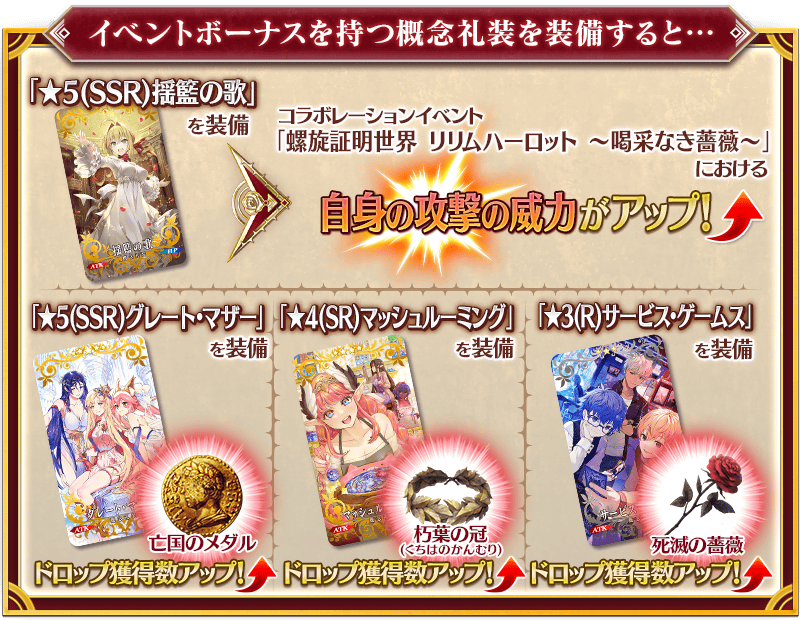
|
★★★★★SSR
◆最大解放時效果◆
|
|
【活動限定】 |
| 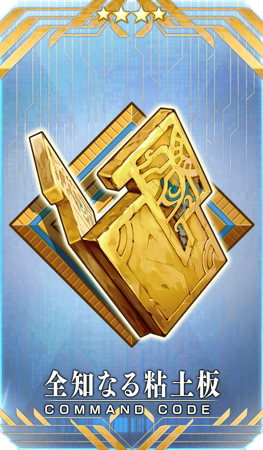 |
★★★★SR |
| 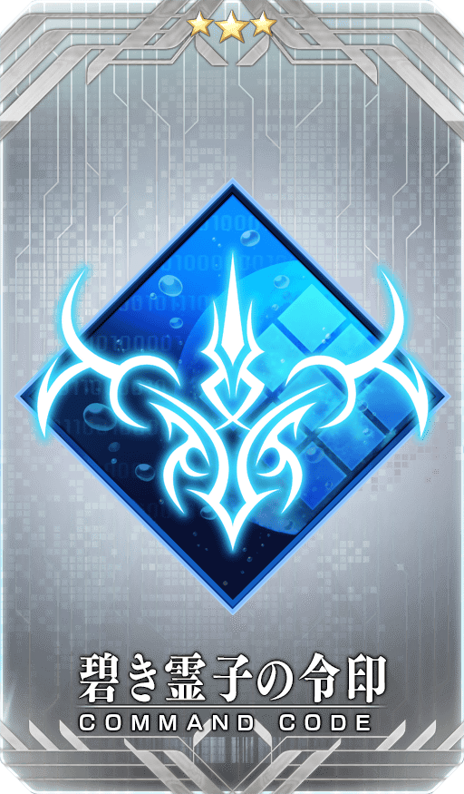 |
★★★R |
活動道具可自點擊管理室(ターミナル)畫面右上「活動報酬」鍵所顯示的「活動道具交換」畫面，交換以下的道具。
※關於傳承結晶、英靈結晶・流星之芙芙ALL★4(HP)、英靈結晶・日輪之芙芙ALL★4(ATK)，在通過日後開放的本活動主線關卡後才能交換。 ※「★4(SR)瑟坦特」的從者硬幣，在「★4(SR)瑟坦特」的正式加入後才能交換。 ※活動道具交換期間結束後「亡國徽章」「朽葉之冠」「死滅薔薇」會消失。
◆交換期間◆
2023年4月26日(三) 19:00～5月24日(三) 11:59
◆能用亡國徽章交換的道具◆
|
【活動限定概念禮裝】 【從者硬幣】 【技能強化＆靈基再臨素材】 【靈基再臨素材】 【其他道具】 |
◆能用朽葉之冠交換的道具◆
|
【活動限定概念禮裝】 【從者硬幣】 【技能強化＆靈基再臨素材】 【靈基再臨素材】 【其他道具】 |
◆能用死滅薔薇交換的道具◆
|
【活動限定概念禮裝】 【從者硬幣】 【技能強化＆靈基再臨素材】 【其他道具】 |

強化「★5(SSR)莫德雷德(Saber)」「★4(SR)尼祿・克勞狄烏斯(Saber)」「★4(SR)阿爾托莉亞・潘德拉剛〔Alter〕(Lancer)」的特別關卡「從者強化關卡」，在迦勒底之門永久追加。
不僅進行對象從者的強化，也可獲得聖晶石做為關卡通過報酬。
※請注意在從者強化關卡沒有文字冒險部份。
◆追加時間◆
2023年5月5日(五) 17:00～
◆開放條件◆
持有強化對象從者，必須使其最終再臨且通過對象從者的強化關卡。
※未持有對象從者的話，不會出現關卡。
※關卡沒有舉辦期限。

強化「★5(SSR)南丁格爾」的特別關卡「從者強化關卡」，在迦勒底之門永久追加。
不僅進行對象從者的強化，也可獲得聖晶石做為關卡通過報酬。
※請注意在從者強化關卡沒有文字冒險部份。
◆追加時間◆
2023年5月2日(二) 17:00～
◆開放條件◆
持有強化對象從者，必須使其最終再臨且通過「強化關卡 南丁格爾」。
※未持有對象從者的話，不會出現關卡。
※關卡沒有舉辦期限。
強化「★5(SSR)雅克・德・莫萊」「★4(SR)吉爾伽美什(Caster)」的特別關卡「從者強化關卡」，在迦勒底之門永久追加。
不僅進行對象從者的強化，也可獲得聖晶石做為關卡通過報酬。
※請注意在從者強化關卡沒有文字冒險部份。
◆追加時間◆
2023年4月30日(日) 17:00～
◆開放條件◆
「★5(SSR)雅克・德・莫萊」的強化關卡為持有「★5(SSR)雅克・德・莫萊」，必須使其最終再臨。
「★4(SR)吉爾伽美什(Caster)」的強化關卡為持有「★4(SR)吉爾伽美什(Caster)」必須使其最終再臨且通過對象從者的強化關卡。
※未持有對象從者的話，不會出現關卡。
※關卡沒有舉辦期限。
在聯動活動「螺旋證明世界 莉莉姆哈洛特 ～無人喝采的薔薇～」的特設頁面，智慧型手機用桌面的贈送實施中！
在社群媒體分享特設頁面就能下載，請務必使用。
◆配發期間◆
2023年4月26日(三) 19:00～5月17日(三) 11:59
◆特設頁面◆
https://www.fate-go.jp/special/2023-lilim_harlot/
【5月5日(五) 17:00追記】
其他還有期間限定「Fate/Grand Order Arcade×Fate/Grand Order聯動活動 所多瑪之獸／德拉科Pick Up召喚」等的情報公開中！
關於詳情，請自下述橫幅確認。
■「Fate/Grand Order Arcade×Fate/Grand Order聯動活動 所多瑪之獸／德拉科Pick Up召喚」詳細情報
■「Fate/Grand Order Arcade×Fate/Grand Order聯動活動開幕前夕Pick Up召喚」詳細情報 ※舉辦期間延長到2023年5月17日(三) 11:59。
■「Fate/Grand Order Arcade×Fate/Grand Order聯動活動Pick Up3召喚」詳細情報
■「Fate/Grand Order Arcade×Fate/Grand Order聯動活動Pick Up3召喚」詳細情報
■「Fate/Grand Order Arcade×Fate/Grand Order聯動活動Pick Up4召喚」詳細情報